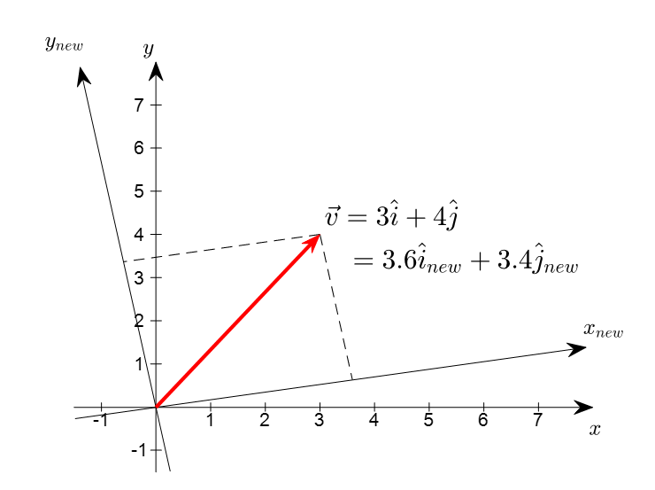

(b) Vector
1. 물리학적 벡터
물리학에서 말하는 ‘크기와 방향으로 정의되는 값’이라고 할 수 있다. 즉, 화살표 이다.
이것은 기하학적인 벡터의 특성을 잘 반영하고 있는 정의라고 할 수 있으며, 특히 벡터의 좌표계의 변환에 대한 불변성(invariance)을 잘 표현하고 있다. 좌표계의 변환에 대해 불변적이라는 말은 아래 그림에서 처럼 좌표계가 변하더라도 벡터 그 자체는 가만히 있다는 것을 의미한다. 아래 그림은 좌표계가 변할 때 벡터는 변하지 않지만 벡터의 성분은 변한다.
이러한 벡터 정의에 대해 첨언하자면 이러한 ‘크기와 방향으로 정의되는 값’이라는 설명은 Euclidean(유클리드) 벡터에 한해서만 적용해 설명할 수 있다는게 한계점이다. 하지만, 이러한 정의는 벡터를 시각화하는데 매우 유용하므로 특별한 언급이 없는 이상 Euclidean 벡터를 이용해 시각화 할 것이다.
2. 수학적 벡터
벡터에 대해 생각해볼 수 있는 정의는 순서를 맞춰 숫자를 나열한 리스트라는 관점이다. 이 관점은 벡터는 하나의 데이터 포인트라는 관점에서 매우 유용하다. 또한, 이런 방식으로 벡터를 생각하게 되면 차원을 무한히 늘리는데에 큰 부담이 없다. 그저 숫자만 더 나열하면 더 고차원의 벡터가 되기 때문이다.
그리고 벡터 성분이 좌표계의 변환에 대해 가변적(not invariant)이라는 점을 잘 표현해주고 있다. 가변적이라는 말을 좀 더 잘 이해하기 위해 그림을 다시 보자. 벡터를 두 가지 좌표계로 표현하고 있는데, 벡터는 가만히 있더라도 벡터를 보는 좌표계가 바뀌게 되면 벡터를 표현하는 좌표가 바뀌는것을 볼 수 있다.
3. 추상화 (물리학적 벡터와 수학적 벡터를 하나로 통일)
추상화된 벡터는 대수(代數)로 표현한 것이다.
물리학적 벡터를 다룰 떄, 아무렇게나 좌표축을 잡을 수 있음. 즉, 벡터는 좌표축과 무관한 개념이다. 벡터의 방향이란, 우주에 절대 좌표가 있지 않은 한, 방향을 정의하기가 불가능하다.
그러나, 두 벡터의 방향이 같다는 것은 한 벡터의 길이를 적당히 늘려 다른 벡터와 일치하게 만들 수 있다고 정의할 수 있다. 이러한 관찰로부터 벡터를 추상화에 다음과 같은 두가지 연산이 가장 중요하다는 결론을 내릴 수 있다.
- 두 벡터의 합
- 벡터의 실수 배